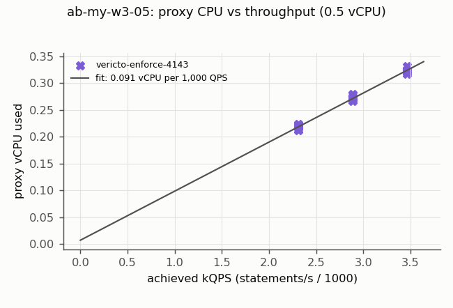
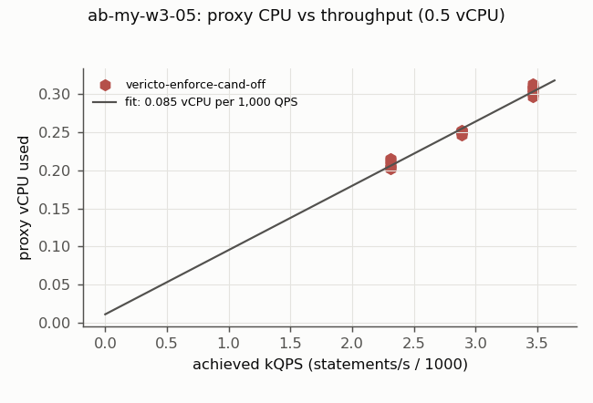
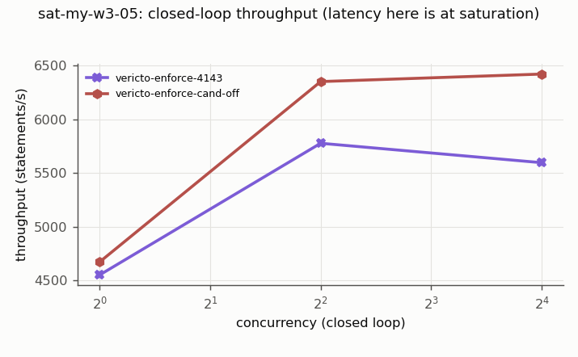
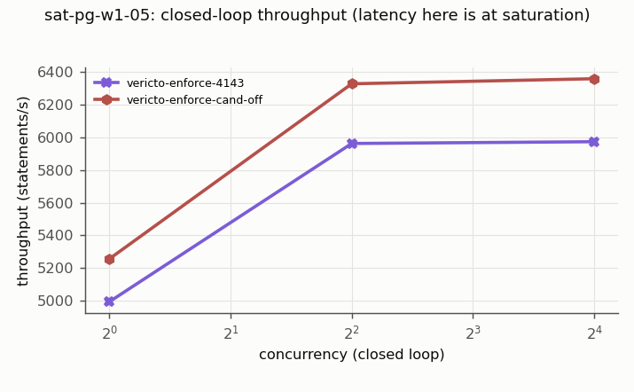
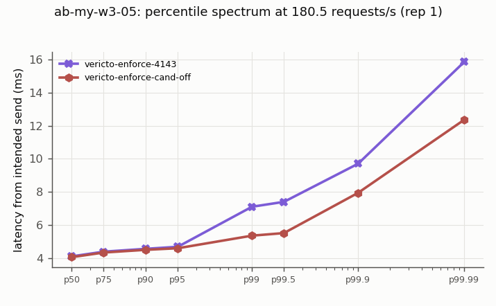
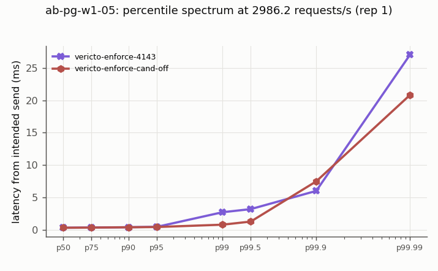

# vericto-bench report: m2-fix-ab
| Run | Profile | Topology | Proxy image | Harness commit | Started | Finished |
| --- | --- | --- | --- | --- | --- | --- |
| bench-2026-11-m2-fix-ab-3 | quick | two-host | `/vericto-proxy@sha256:ad4afa7abbcadb1564da1413b68f7d5a3c473417b373163c9d6ab3c8a446adaf` | `218bcfb` | 2026-10-23T03:23:03.996931+00:00 | 2026-10-23T05:42:21.672634+00:00 |
Cells: 94 recorded, 92 used, 0 invalid (listed at the end, not used).
## Added latency (open loop, from intended send time; target minus direct, paired)
| Curve | Target | Rate/s | % of S | n | added p50 ms [95%] | added p99 ms [95%] | added p99.9 ms [95%] | Note |
| --- | --- | --- | --- | --- | --- | --- | --- | --- |
## Every cell
| Cell | Status | Achieved/s | p50 ms | p99 ms | p99.9 ms | max ms | proxy vCPU | max aggregate Mbps |
| --- | --- | --- | --- | --- | --- | --- | --- | --- |
| sat-my-w3-05.vericto-enforce-cand-off.c1.rep1 | ok | 292.0 | 3.371 | 4.495 | 4.847 | 13.151 | 0.412 | 510.5 |
| sat-my-w3-05.vericto-enforce-4143.c1.rep1 | ok | 284.5 | 3.409 | 6.119 | 6.539 | 13.487 | 0.428 | 498.1 |
| sat-my-w3-05.vericto-enforce-cand-off.c4.rep1 | ok | 396.9 | 5.299 | 52.959 | 54.751 | 65.503 | 0.500 | 695.4 |
| sat-my-w3-05.vericto-enforce-4143.c4.rep1 | ok | 361 | 5.583 | 55.327 | 59.135 | 71.103 | 0.500 | 636.3 |
| sat-my-w3-05.vericto-enforce-cand-off.c16.rep1 | ok | 400.9 | 21.231 | 74.239 | 84.095 | 86.271 | 0.500 | 711.8 |
| sat-my-w3-05.vericto-enforce-4143.c16.rep1 | ok | 349.3 | 26.831 | 80.127 | 88.895 | 94.143 | 0.500 | 622.3 |
| sat-pg-w1-05.vericto-enforce-4143.c1.rep1 | ok | 4994.9 | 0.193 | 0.238 | 2.779 | 14.868 | 0.455 | 100.6 |
| sat-pg-w1-05.vericto-enforce-cand-off.c1.rep1 | ok | 5256.6 | 0.184 | 0.221 | 1.091 | 14.753 | 0.453 | 104.7 |
| sat-pg-w1-05.vericto-enforce-4143.c4.rep1 | ok | 5961.6 | 0.329 | 3.025 | 47.734 | 52.657 | 0.500 | 119.9 |
| sat-pg-w1-05.vericto-enforce-cand-off.c4.rep1 | ok | 6326.1 | 0.324 | 1.374 | 47.087 | 49.198 | 0.500 | 126.9 |
| sat-pg-w1-05.vericto-enforce-4143.c16.rep1 | ok | 5972.3 | 1.272 | 51.577 | 54.431 | 65.035 | 0.500 | 120.8 |
| sat-pg-w1-05.vericto-enforce-cand-off.c16.rep1 | ok | 6357.0 | 1.243 | 51.512 | 52.610 | 64.021 | 0.500 | 129.6 |
| ab-my-w3-05.vericto-enforce-4143.r50.rep0.netprobe | ok | 50 | 4.251 | 5.763 | 7.383 | 7.383 | 0.077 | 86.5 |
| ab-my-w3-05.vericto-enforce-4143.r180.5.rep1 | ok | 180.5 | 4.103 | 7.103 | 9.559 | 15.991 | 0.273 | 311.5 |
| ab-my-w3-05.vericto-enforce-cand-off.r180.5.rep1 | ok | 180.5 | 4.055 | 5.355 | 7.767 | 14.167 | 0.252 | 311.6 |
| ab-my-w3-05.vericto-enforce-4143.r216.6.rep1 | ok | 216.6 | 4.123 | 7.219 | 9.295 | 20.623 | 0.324 | 373.9 |
| ab-my-w3-05.vericto-enforce-cand-off.r216.6.rep1 | ok | 216.6 | 4.003 | 5.371 | 8.031 | 15.543 | 0.298 | 414.9 |
| ab-my-w3-05.vericto-enforce-4143.r144.4.rep1 | ok | 144.4 | 4.139 | 6.927 | 7.871 | 13.863 | 0.217 | 250.4 |
| ab-my-w3-05.vericto-enforce-cand-off.r144.4.rep1 | ok | 144.4 | 4.089 | 5.291 | 6.403 | 15.711 | 0.203 | 250.1 |
| ab-my-w3-05.vericto-enforce-cand-off.r216.6.rep2 | ok | 216.6 | 4.055 | 5.435 | 8.119 | 16.511 | 0.308 | 373.9 |
| ab-my-w3-05.vericto-enforce-4143.r216.6.rep2 | ok | 216.6 | 4.123 | 7.247 | 9.751 | 25.039 | 0.326 | 374.0 |
| ab-my-w3-05.vericto-enforce-cand-off.r180.5.rep2 | ok | 180.5 | 4.051 | 5.259 | 6.827 | 15.071 | 0.251 | 311.3 |
| ab-my-w3-05.vericto-enforce-4143.r180.5.rep2 | ok | 180.5 | 4.135 | 7.167 | 9.327 | 19.503 | 0.280 | 311.7 |
| ab-my-w3-05.vericto-enforce-cand-off.r144.4.rep2 | ok | 144.4 | 4.167 | 5.275 | 8.007 | 15.903 | 0.214 | 256.7 |
| ab-my-w3-05.vericto-enforce-4143.r144.4.rep2 | ok | 144.4 | 4.099 | 6.923 | 7.827 | 16.863 | 0.213 | 250.1 |
| ab-my-w3-05.vericto-enforce-4143.r180.5.rep3 | ok | 180.5 | 4.079 | 7.051 | 8.099 | 15.503 | 0.268 | 311.9 |
| ab-my-w3-05.vericto-enforce-cand-off.r180.5.rep3 | ok | 180.5 | 4.041 | 5.223 | 7.347 | 16.655 | 0.251 | 311.9 |
| ab-my-w3-05.vericto-enforce-4143.r144.4.rep3 | ok | 144.4 | 4.167 | 7.011 | 7.643 | 14.631 | 0.221 | 250.2 |
| ab-my-w3-05.vericto-enforce-cand-off.r144.4.rep3 | ok | 144.4 | 4.115 | 5.223 | 6.699 | 15.047 | 0.207 | 250.3 |
| ab-my-w3-05.vericto-enforce-4143.r216.6.rep3 | ok | 216.6 | 4.107 | 7.191 | 8.423 | 18.815 | 0.317 | 383.1 |
| ab-my-w3-05.vericto-enforce-cand-off.r216.6.rep3 | ok | 216.6 | 4.015 | 5.423 | 7.867 | 18.511 | 0.301 | 373.7 |
| ab-my-w3-05.vericto-enforce-cand-off.r144.4.rep4 | ok | 144.4 | 4.089 | 5.223 | 6.895 | 16.655 | 0.204 | 250.2 |
| ab-my-w3-05.vericto-enforce-4143.r144.4.rep4 | ok | 144.4 | 4.191 | 7.063 | 9.295 | 17.439 | 0.223 | 250.3 |
| ab-my-w3-05.vericto-enforce-cand-off.r216.6.rep4 | ok | 216.6 | 3.993 | 5.359 | 10.023 | 17.871 | 0.300 | 373.7 |
| ab-my-w3-05.vericto-enforce-4143.r216.6.rep4 | ok | 216.6 | 4.143 | 7.319 | 8.171 | 21.183 | 0.332 | 374.2 |
| ab-my-w3-05.vericto-enforce-cand-off.r180.5.rep4 | ok | 180.5 | 4.051 | 5.335 | 7.347 | 16.079 | 0.251 | 311.5 |
| ab-my-w3-05.vericto-enforce-4143.r180.5.rep4 | ok | 180.5 | 4.107 | 7.059 | 8.551 | 20.879 | 0.270 | 320.2 |
| ab-my-w3-05.vericto-enforce-4143.r216.6.rep5 | ok | 216.6 | 4.119 | 7.191 | 9.343 | 20.255 | 0.321 | 374.2 |
| ab-my-w3-05.vericto-enforce-cand-off.r216.6.rep5 | ok | 216.6 | 4.031 | 5.491 | 9.367 | 17.775 | 0.312 | 373.7 |
| ab-my-w3-05.vericto-enforce-4143.r144.4.rep5 | ok | 144.4 | 4.139 | 6.963 | 7.831 | 14.447 | 0.217 | 250.2 |
| ab-my-w3-05.vericto-enforce-cand-off.r144.4.rep5 | ok | 144.4 | 4.065 | 5.111 | 7.539 | 13.887 | 0.202 | 250.1 |
| ab-my-w3-05.vericto-enforce-4143.r180.5.rep5 | ok | 180.5 | 4.107 | 7.111 | 8.935 | 17.999 | 0.274 | 311.9 |
| ab-my-w3-05.vericto-enforce-cand-off.r180.5.rep5 | ok | 180.5 | 4.057 | 5.375 | 6.311 | 16.815 | 0.253 | 319.0 |
| ab-my-w3-05.vericto-enforce-cand-off.r144.4.rep6 | ok | 144.4 | 4.175 | 5.339 | 6.363 | 17.023 | 0.215 | 250.2 |
| ab-my-w3-05.vericto-enforce-4143.r144.4.rep6 | ok | 144.4 | 4.155 | 6.983 | 7.795 | 14.191 | 0.220 | 250.4 |
| ab-my-w3-05.vericto-enforce-cand-off.r180.5.rep6 | ok | 180.5 | 4.049 | 5.343 | 8.075 | 16.751 | 0.247 | 311.5 |
| ab-my-w3-05.vericto-enforce-4143.r180.5.rep6 | ok | 180.5 | 4.065 | 7.131 | 7.927 | 16.655 | 0.266 | 312.0 |
| ab-my-w3-05.vericto-enforce-cand-off.r216.6.rep6 | ok | 216.6 | 4.065 | 5.407 | 8.935 | 18.175 | 0.306 | 373.7 |
| ab-my-w3-05.vericto-enforce-4143.r216.6.rep6 | ok | 216.6 | 4.131 | 7.239 | 10.031 | 19.439 | 0.323 | 373.7 |
| ab-my-w3-05.vericto-enforce-4143.r216.6.rep7 | ok | 216.6 | 4.123 | 7.207 | 8.727 | 20.623 | 0.321 | 382.4 |
| ab-my-w3-05.vericto-enforce-cand-off.r216.6.rep7 | ok | 216.6 | 4.025 | 5.443 | 7.803 | 18.351 | 0.308 | 373.6 |
| ab-my-w3-05.vericto-enforce-4143.r180.5.rep7 | ok | 180.5 | 4.127 | 7.095 | 9.159 | 15.551 | 0.278 | 311.8 |
| ab-my-w3-05.vericto-enforce-cand-off.r180.5.rep7 | ok | 180.5 | 4.045 | 5.331 | 7.511 | 15.383 | 0.251 | 311.5 |
| ab-my-w3-05.vericto-enforce-4143.r144.4.rep7 | ok | 144.4 | 4.147 | 6.987 | 7.827 | 14.919 | 0.221 | 250.3 |
| ab-my-w3-05.vericto-enforce-cand-off.r144.4.rep7 | ok | 144.4 | 4.151 | 5.315 | 6.835 | 16.511 | 0.213 | 250.1 |
| ab-my-w3-05.vericto-enforce-cand-off.r216.6.rep8 | ok | 216.6 | 4.059 | 5.451 | 7.887 | 17.327 | 0.314 | 382.6 |
| ab-my-w3-05.vericto-enforce-4143.r216.6.rep8 | ok | 216.6 | 4.147 | 7.223 | 9.839 | 21.631 | 0.325 | 374.3 |
| ab-my-w3-05.vericto-enforce-cand-off.r144.4.rep8 | ok | 144.4 | 4.103 | 5.275 | 6.399 | 13.559 | 0.207 | 250.1 |
| ab-my-w3-05.vericto-enforce-4143.r144.4.rep8 | ok | 144.4 | 4.091 | 6.867 | 7.491 | 15.239 | 0.212 | 250.4 |
| ab-my-w3-05.vericto-enforce-cand-off.r180.5.rep8 | ok | 180.5 | 4.019 | 5.263 | 6.683 | 14.503 | 0.250 | 313.2 |
| ab-my-w3-05.vericto-enforce-4143.r180.5.rep8 | ok | 180.5 | 4.103 | 7.063 | 8.527 | 19.359 | 0.272 | 311.5 |
| ab-pg-w1-05.vericto-enforce-4143.r50.rep0.netprobe | ok | 48.9 | 0.514 | 0.653 | 1.959 | 1.959 | 0.007 | 1.6 |
| ab-pg-w1-05.vericto-enforce-4143.r2986.2.rep1 | ok | 2994.6 | 0.367 | 2.753 | 6.039 | 31.725 | 0.278 | 110.9 |
| ab-pg-w1-05.vericto-enforce-cand-off.r2986.2.rep1 | ok | 2992.1 | 0.363 | 0.835 | 7.507 | 26.122 | 0.262 | 61.3 |
| ab-pg-w1-05.vericto-enforce-4143.r1791.7.rep1 | ok | 1784.1 | 0.369 | 1.212 | 3.405 | 21.437 | 0.172 | 37.3 |
| ab-pg-w1-05.vericto-enforce-cand-off.r1791.7.rep1 | ok | 1794.6 | 0.365 | 0.560 | 5.538 | 25.689 | 0.160 | 37.3 |
| ab-pg-w1-05.vericto-enforce-cand-off.r1791.7.rep2 | ok | 1800.0 | 0.363 | 0.553 | 1.575 | 18.021 | 0.157 | 36.8 |
| ab-pg-w1-05.vericto-enforce-4143.r1791.7.rep2 | ok | 1797.2 | 0.371 | 1.602 | 4.847 | 31.725 | 0.168 | 37.4 |
| ab-pg-w1-05.vericto-enforce-cand-off.r2986.2.rep2 | ok | 2991.5 | 0.363 | 0.839 | 3.381 | 19.333 | 0.263 | 62.7 |
| ab-pg-w1-05.vericto-enforce-4143.r2986.2.rep2 | ok | 2979.9 | 0.364 | 2.732 | 5.722 | 23.450 | 0.271 | 100.1 |
| ab-pg-w1-05.vericto-enforce-4143.r2986.2.rep3 | ok | 2992.8 | 0.365 | 2.759 | 5.880 | 24.315 | 0.275 | 61.1 |
| ab-pg-w1-05.vericto-enforce-cand-off.r2986.2.rep3 | ok | 2982.3 | 0.362 | 0.798 | 3.178 | 28.297 | 0.262 | 61.0 |
| ab-pg-w1-05.vericto-enforce-4143.r1791.7.rep3 | ok | 1794.5 | 0.368 | 1.387 | 4.305 | 23.658 | 0.173 | 37.4 |
| ab-pg-w1-05.vericto-enforce-cand-off.r1791.7.rep3 | ok | 1800.9 | 0.367 | 0.570 | 2.688 | 19.383 | 0.164 | 38.2 |
| ab-pg-w1-05.vericto-enforce-cand-off.r1791.7.rep4 | ok | 1789.7 | 0.365 | 0.555 | 1.499 | 20.765 | 0.161 | 37.2 |
| ab-pg-w1-05.vericto-enforce-4143.r1791.7.rep4 | ok | 1792.5 | 0.367 | 1.310 | 5.045 | 26.421 | 0.164 | 78.1 |
| ab-pg-w1-05.vericto-enforce-cand-off.r2986.2.rep4 | ok | 2990.7 | 0.364 | 0.794 | 4.630 | 22.832 | 0.263 | 61.7 |
| ab-pg-w1-05.vericto-enforce-4143.r2986.2.rep4 | ok | 2994.2 | 0.363 | 2.702 | 5.599 | 26.568 | 0.269 | 61.3 |
| ab-pg-w1-05.vericto-enforce-4143.r2986.2.rep5 | ok | 2984.8 | 0.367 | 2.759 | 6.121 | 23.711 | 0.278 | 61.5 |
| ab-pg-w1-05.vericto-enforce-cand-off.r2986.2.rep5 | ok | 2977.4 | 0.363 | 0.839 | 4.682 | 23.053 | 0.263 | 61.1 |
| ab-pg-w1-05.vericto-enforce-4143.r1791.7.rep5 | ok | 1782.9 | 0.368 | 1.351 | 4.346 | 20.462 | 0.169 | 37.1 |
| ab-pg-w1-05.vericto-enforce-cand-off.r1791.7.rep5 | ok | 1795.5 | 0.369 | 0.570 | 1.659 | 22.305 | 0.161 | 37.2 |
| ab-pg-w1-05.vericto-enforce-cand-off.r1791.7.rep6 | ok | 1797.2 | 0.364 | 0.543 | 1.458 | 18.107 | 0.158 | 69.8 |
| ab-pg-w1-05.vericto-enforce-4143.r1791.7.rep6 | ok | 1793.6 | 0.366 | 1.315 | 3.624 | 17.057 | 0.166 | 37.7 |
| ab-pg-w1-05.vericto-enforce-cand-off.r2986.2.rep6 | ok | 2994.4 | 0.362 | 0.816 | 2.658 | 23.530 | 0.260 | 62.7 |
| ab-pg-w1-05.vericto-enforce-4143.r2986.2.rep6 | ok | 2994.5 | 0.364 | 2.763 | 6.166 | 26.417 | 0.276 | 61.3 |
| ab-pg-w1-05.vericto-enforce-4143.r2986.2.rep7 | ok | 2990.8 | 0.364 | 2.622 | 5.628 | 25.594 | 0.267 | 61.2 |
| ab-pg-w1-05.vericto-enforce-cand-off.r2986.2.rep7 | ok | 2983.6 | 0.361 | 0.792 | 2.410 | 26.149 | 0.256 | 61.5 |
| ab-pg-w1-05.vericto-enforce-4143.r1791.7.rep7 | ok | 1802.0 | 0.365 | 1.586 | 4.394 | 22.158 | 0.164 | 79.4 |
| ab-pg-w1-05.vericto-enforce-cand-off.r1791.7.rep7 | ok | 1803.2 | 0.366 | 0.573 | 1.667 | 22.047 | 0.163 | 37.8 |
| ab-pg-w1-05.vericto-enforce-cand-off.r1791.7.rep8 | ok | 1784.8 | 0.366 | 0.565 | 3.191 | 27.808 | 0.160 | 38.1 |
| ab-pg-w1-05.vericto-enforce-4143.r1791.7.rep8 | ok | 1788.1 | 0.368 | 1.315 | 4.311 | 25.721 | 0.165 | 36.7 |
| ab-pg-w1-05.vericto-enforce-cand-off.r2986.2.rep8 | ok | 2987.5 | 0.363 | 0.792 | 2.789 | 19.606 | 0.259 | 61.9 |
| ab-pg-w1-05.vericto-enforce-4143.r2986.2.rep8 | ok | 2988.1 | 0.365 | 2.725 | 5.662 | 23.975 | 0.274 | 62.1 |
## Proxy CPU per 1,000 QPS (linear fit, open-loop cells below 80% of S)
| Curve | Target | Size | n | vCPU per 1,000 QPS [95%] | intercept vCPU | USD/month per 1,000 QPS at 70% utilisation |
| --- | --- | --- | --- | --- | --- | --- |
| ab-my-w3-05 | vericto-enforce-4143 | 0.5 | 24 | 0.0914 [0.0875, 0.0953] | 0.0075 | 3.09 |
| ab-my-w3-05 | vericto-enforce-cand-off | 0.5 | 24 | 0.0846 [0.0797, 0.0894] | 0.0106 | 2.86 |
## Network traffic (caps: 400 Mbps per component, 800 Mbps aggregate)
Cells aborted by a cap: 0. Per-cell maxima are in traffic.csv; bytes/s per direction over each measured window in traffic_directions.csv.
## Charts





